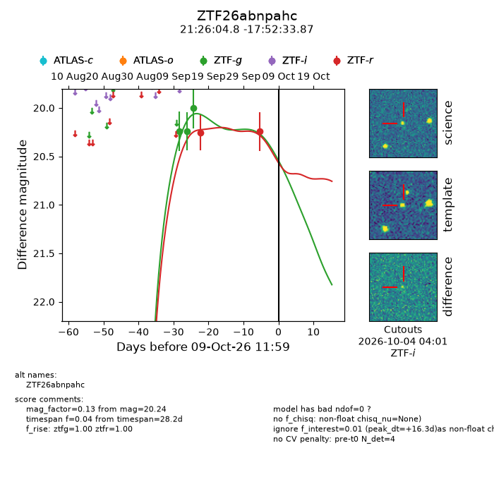
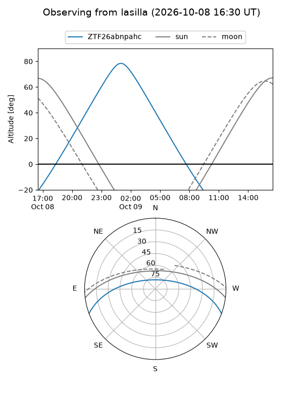
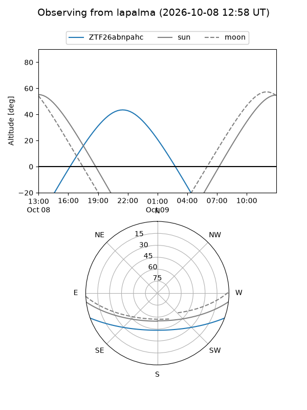
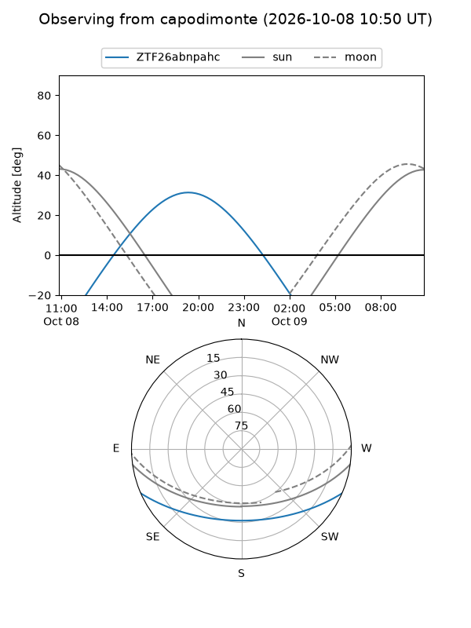
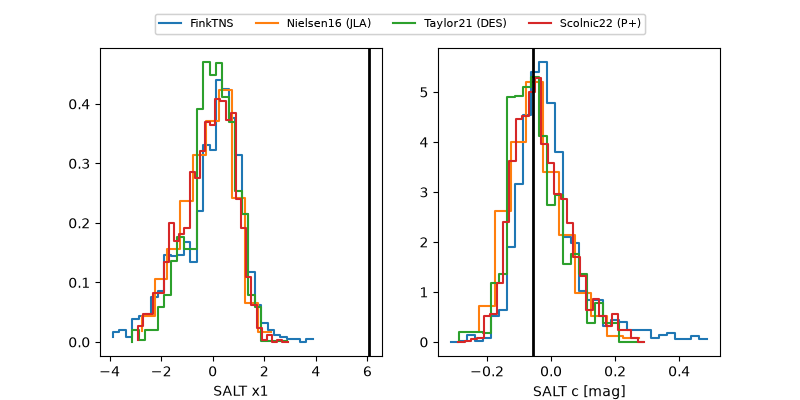

ZTF26abnpahc
Target ZTF26abnpahc at 2026-10-09 12:01
Aliases and brokers:
FINK-ZTF: ztf.fink-portal.org/ZTF26abnpahc
Lasair-ZTF: lasair-ztf.lsst.ac.uk/objects/ZTF26abnpahc
ALeRCE-ZTF: alerce.online/object/ZTF26abnpahc
Direct TNS query: direct search
alt names
ZTF26abnpahc (ztf,fink_ztf)
Coordinates:
equatorial (ra, dec) = 321.5198,-17.87608
equatorial (HMS+DMS) = 21:26:04.76,-17:52:33.87
galactic (l, b) = (32.7710,-41.99804)
Flags:
peak dt: +16.3
Photometry:
last ztfg=20.00, ztfr=20.24
3 ztfg, 2 ztfr detections
Lightcurve

Visibility



Additional plots
